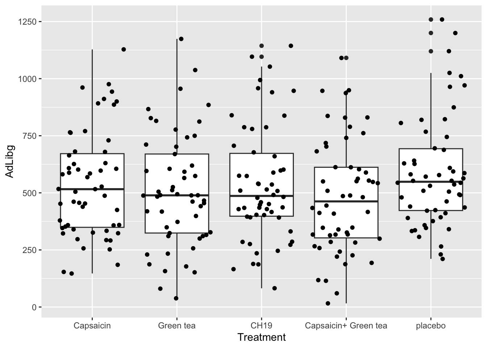
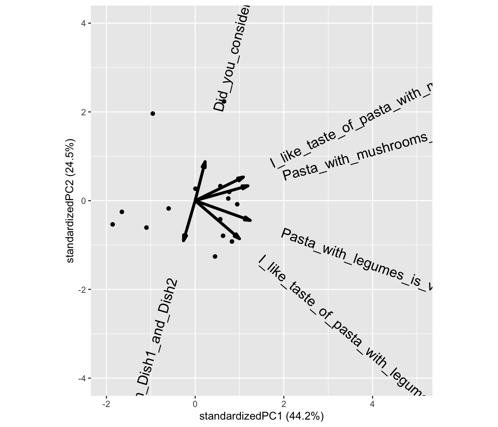

Chapter 4 Plotting data
Visualizing data is of utmost importance. Especially, looking at the raw data will enable you to point towards outliers and tendencies which may be lost when representing the data with descriptive statistics.
ggplot2 is a wide spread library for plotting data and used by a lot of users. Check it out on videos:
There is a very condensed cheat-sheet for ggplot2 on RStudios webpage
Loading the needed datasets chili and pasta:
library(data4consumerscience) load the package data4consumerscience, which contains the data chili and pasta, which are loaded using the data()-function.
pasta <- pasta[pasta$StationName=='Pasta with legumes',] subsets the dataset pasta to only contain the rows, where the value in the column StationName is equal to 'Pasta with legumes'.
library(data4consumerscience)
data(chili)
data(pasta)
# we subset to only have the "Pasta with legumes" data.
pasta <- pasta[pasta$StationName=='Pasta with legumes',]4.1 Histograms and boxplots
To show the total consumption a histogram is useful.

ggplot(data = chili, aes(x = AdLibg)) + geom_histogram() creates of a ggplot() object using the data from the chili dataset.
It also specifies the aesthetics (visual mappings) for the plot, where AdLibg is mapped to the x-axis.
geom_histogram() adds a layer to the plot a histogram representing the data. Since no aesthetic mappings are provided inside geom_histogram() in this specific line, it’s assumed that the AdLibg values on the x-axis, with count on the y-axis.
The plot reveals a bi-modal distribution with an upper tail.
These observations comes from 5 different treatments, 27 different judges and at 10 test days. We can infer this using a boxplot with jittered raw data on top.
Per treatment:

Again, the ggplot()-function is used, specifying the data frame chili as the data source for the plot. The aes() function is used to define aesthetic mappings. x = Treatment maps the variable Treatment to the x-axis, and y = AdLibg maps the variable AdLibg to the y-axis.
geom_boxplot() adds a box plot layer to the plot, showing the median, quartiles, and possible outliers in the data. Each box plot will be created for each unique value in the Treatment variable on the x-axis.
geom_jitter() adds a jitter plot layer to the plot. A jitter plot is used to show individual data points along the x-axis with a small amount of random horizontal jitter to avoid overlapping points. This is especially useful when you have multiple data points with the same x-value. The AdLibg values for each Treatment will be represented as jittered points along the x-axis.
Per Judge:

The only thing changed here is what is displayed on the x-axis, which is now factor(Judge). factor() is used to specify, that while the values in the column Judge are numerical, and thus can be considered continuous, R should treat them as categorical.
None of these explains the bi-modality seen in the histogram. However, we can combine test-day information, which essentially is reflecting whether it is first or second trial splitting at day 5 (color = factor(TestDay>5)).
Note that we also added group = factor(Judge), to ensure that the boxplots are grouped according to Judge, rather than according to factor(TestDay>5), as color also groups, but is overwritten by group.
ggplot(data = chili, aes(x = factor(Judge), y = AdLibg, group = factor(Judge), color = factor(TestDay>5))) +
geom_boxplot() + geom_jitter()
This coloring shows a clear difference between trials, which explains the bi-modal distribution. It also explains why the two modes of the distribution are overlapping, and why the distribution is skewed. Because while most judges have consumed more during the first trial, some judges did the opposite - higher consumption during the second trial.
4.2 Scatter plots
Lets plot the consumption (AdLibg) as a function of LikingAppearance, and add a tendency line:
ggplot(data = chili, aes(x = LikingAppearance, y = AdLibg)) +
geom_point() + stat_smooth(formula = 'y ~ x', se = F)
This plot shows AdLibg on the y-axis plotted against LikingApperance on the x-axis, with stat_smooth() adding a tendency line. formula = 'y ~ x' specifies, that the tendency line should be fitted to reflect y as a function of x. se = F indicates that the standard error around the regression line should not be displayed. Try adding method = lm inside the brackets of stat_smooth(), and see how the line changes.
Now, lets funk this up by splitting into test-days and get colors according to product:
ggplot(data = chili, aes(x = Hunger, y = AdLibg, color = Treatment)) +
geom_point() + stat_smooth(formula = 'y ~ x', se = F, method = lm) +
facet_wrap(~ TestDay>5)
The only thing added here is facet_wrap(~ TestDay>5). It adds a faceting layer to the plot, which allows you to create multiple small plots (facets) based on the values of a specific variable. Here, TestDay > 5 is used as the condition for faceting. It means that the data will be divided into facets based on the TestDay column, and each facet will show data points and smoothing lines for cases where the value of TestDay is lower and greater than 5, respectively.
The plot shows, that the tendency of food intake increasing with increased hunger, is true for all treatments, as well as during both trial days.
4.3 How to export plots
The plots shown in the Plots pane (lower right of RStudio) can be saved using the Export bottom.
You can also save the plots to a file using the ggsave()-function.
If you run ggsave() without specifying which plot to export, it will use the latest. You can also directly specify the plot to export:
myplot <- ggplot(data = chili, aes(Hunger,AdLibg, color = Treatment)) +
geom_point() + stat_smooth(se = F, method = lm) + facet_wrap(~ TestDay>5)
ggsave('./data/YourFolderForNicePlots/hunger_vs_consumption.pdf',myplot)The first line of code saves the plot as a ggplot-object named myplot, and the second line saves the object myplot to the path that you specify ('./data/YourFolderForNicePlots/hunger_vs_consumption.pdf'),
ggsave() supports different formats (.png, .tiff, .pdf,…) and further allows for editing the size (height = , width = ). Just change the .pdf in to the format your need.